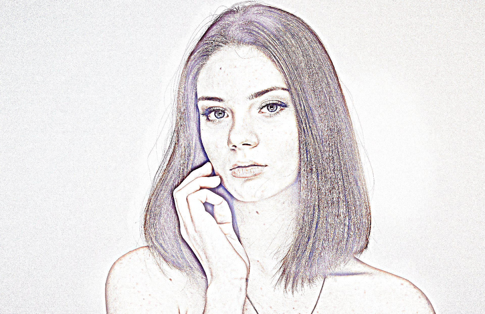
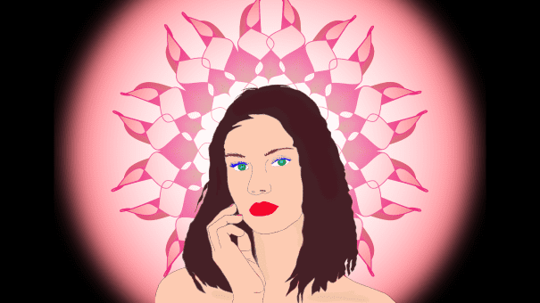

De programma die ik erbij gebruikt zijn de illustrator en de Photoshop. Bij de Ai heb ik eerst de tekening gemaakt en dan overgetrokken in het programma. Daarna heb ik ingekleurd. Met Ps heb ik de foto opgezocht en nagetekend. Daarna heb ik de afbeeldingen bewerkt. Voor meer details klik hieronder.

Hier heb ik eerst een foto opgezocht en de lijn overgetrokken in de Ps. Daarna heb ik de bloemen gemaakt in de Ai. Ik heb de foto en de bloemen samentoegevoegd en dan inkleuren.

The face of another
This look a like drawing was originally a normal image that has been edited into a drawing. In this drawing the women has got an different face that the actual photo, therefore ‘The face of another’.

The sun lady
The women is edited in a Phomartoshop and got a make-over. Behind her is the flower by using Illustrator. It stands for illuminated flower that makes it look like the sun. This photo should give a sens of Buddhist.
The luxury hall
This drawing represents the image of wealth. The women in a beautiful red dress is waiting for her husband along with her cat. The husband just return home after work.

Party on the street
This image gice the indicate of most young people. At that time people often laugh and everything looks optimistic.

Afraid of monsters
Here you see people screaming and fearing the monster. You see the facial expression of fear and panic.
Round to the bottom
This image is based on the round shape. All of the shape are round that why the name ‘Round to the bottom.